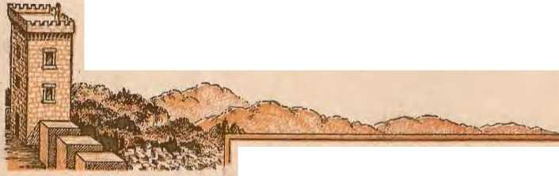
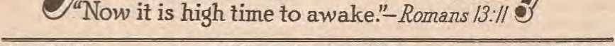

The education that will win eternal peace is at hand
"Whatsoever a man soweth, that shall he also reap"
The way hlazed for entry by others on earth
Right to defend against indictment not allowed Jehovah's witnesses
THE MISSION OF THIS JOURNAL
News sources that are able to keep you awake to the vital issues of our times must be unfettered by censorship and selfish interests. "Awa.kel" has no fetters. It recognizes faets, faces fatc-ts, is free to publish fa.cltl. It is not bound by political ambitions or obiiOi’-ti ..the; it is unhampered by advertisers whose toes must not be trodden on; it is unprejudiced by traditional creeds. This journal keeps itself free that it may speak freely to you. But it does not abuse its freedom. It maintains integrity to truth.
"Awake 1" uses the regular news channels, but is not dependent on them. Its own correspondents are on al continents, in scores of nations. From the four corners of the earth theil." uncensored, on-the-scenes reports come to you through these columns. This jo^nal's viewpoint is not narrow, but s international. It is read in many nations, in many languages, by persons of all ages. ThrouQh its pages many fields of knowledge pass in review—government, commerce, religion, history, geography, science, social conditions, natural wonders—why, Its coverage is as broad as the earth and as high as the heavens.
"Awake I" pledges itself to righteous principles, to exposing hidden foes and subtle dangers, to championing freedom for alli to comforting mourners and strengthening those disheartened by the failures of a delinquent world, reflecting sure hope for the establishment of a righteous New Wodd.
Get acquainted with "Awake!" Keep awake by reading "Awake!"
---^^^^-.-^^^^u
PllLiSB&o SBIItltoNTDLr Br WATCHTOWER BIBLE AND TRACT SOCIETY, INC.
117 Adams Street Brooklyn l, N. Y., U. s. A.
N. H. KNona, Pruidrat W. E. Vak A.u:nunon, Secnetarv
Five cents a copy One dollar a year
Notice 1'Q Subscribers
Remtttanus: l'leaw rtmlt b1 poslll oQte llr by po&1al or e:rpross money order or by bauk draft. Wilen com or currencY ill lost lo rho ^^rary maU,, Ibert. '"' 110 rrortl!, nemllt$nces Irorn countries where the SOCiety h.. no BranC omc:ucs mu be mAde to the Brookb'n omee, but only by Intcrn^UonU postal mouey order. lly ce-lpL or a new llr renowal <nb$criptloh WH be aekoo,.lcdged only when roquoot.d.
'Notice of expirafloo: Such notice h sent with the Jourupl ai Jea.n two bsues before Uro gubs scriMlon cxdres. .
Chang. tf :;dr:: pf:::' wnriw cbaiw of address dlreet to us rather tban lo the ]l<>ot omce. Your nqu..t siiouid reacl us at leant three week before the date or l«i"' with whleb II s t6 take <jl!ect Seod your old 3JI well as lhe new a4rtri".IS,
&n^ute<l .. s<ct,nd^olass matll!r at llroo^kl, r T., Act, ot Jlarcb 8, 1879. l'rintcl 1n U. S. A.
CONTENTS
Will World Education Estabjsh Peace? 3
What Sy&tem Shiill Be Adopted 7
Education Mnkcs the Difference
Religion Fenrs to A.dvocate
Overthrowing the Kings of the Earth 14
Gilead Opeus Eighth School Term
1'Thy Word Is Truth"
Pions Pressure on Politieiat:;
Defense Denied Jebovnlt's witnesses
Boards Ordered Ministers to War
Courts Rubber Stamps for Boards
Fight Reaches Climax iu Supreme Court 26
Flood of Prosecutions Sweep Out Justice 28
, 1/..
ZlVUAKE/
Volume XXVI Brooklyn, N. Y., October 22, 1946 Njl.ir.«.
THERE is no question that there is a need for peace and unity throughout the world at the present time. The question is, How can such desired peace be established ? Since all efforts to outlaw war through treaty agreements have failed, many leaders of the world say that peace will come only through education, education of the whole world.
While many are willing to admit that peace and unity can be attained through world education, not many are willing to agree on the method and system to be employed. "What kind of textbooks shall be used? What system of instruction shall be employed' Who shall supervise the education of the world? These are the knotty questions that must first be decided correctly before any globeencircling peace can be attained through world education.
Hitlor and his gang thought that they could unify the whole world by seizing the children in their cribs and, by brute force, educating them in the Nazi way of thinking. Bnt such totalitarian world education did not and could not establish a genuine and lasting peace. The older method of world education employed by the Roman Catholic Hierarchy during the heyday of the •(Holy Roman Empire" also failed to estahlish peace. Their method consisted of educating. only the clergy to Tead and wdte and speak, while the masses were educated in the art of being silent and subservient to papal Rome.
With the corning of the Reformation light that Dark Ago method of education in superstition and fear vanished from many parts of the earth, and great advancements in science and learning were soon made Even during the last quarter-century a great battle has been won against illiteracy. It is said that 30i000,000 in Inclia, 40,000,000 in China and 100,000,000 in Russia have been taught to read. Nevertheless, peace has not come as a result of such education, but rather wars. The most terrible and peace-shattering wars in all human history have come with the advancement made in the education of the masses. Why is this!
After a year of study the Vienna History Teachers Association of Austria has come to the conclusion that one of the greatest faults in the educational program is in the history books used in the schools of the world. In such textbooks militarism and hero-worship have been stressed, and this glorifying of past wars is thought to be the cause for modern-day wars. Consequently Austria is revising all her history hooks to show primarily tJie history of economic and cultural pnrsnits, with the record of wars placed in a secondary position. It is a mistake, however, to thinli that such revision will lead to world peace, as will be shown subsequently.
If the educational systems of the de-ftated ''Axis" powers are to he discarded. what svstew is to be used in their lJlace l It:; the American system or the Ttussian type a satisfactory model for world education? Consider for a moment the American system.
A11 will agree that the present generation ol' American 11 ‘n and women have had the greatest educational advantages of any pcopJp 011 this earth. .More of her hoys and girl:-; have gone and are going to college titan hi all the rest of the world put together. However, this does not warrant the conclusion that they enjoy greater peace aud nnHy among themselves than other nations, as a result of such education. The juvenile delinquency aml parpn t eli’ linquenc.y too, the inability of parents tn govern Ilieir immediate fmnil ir’s, do not testi l'y that the educational svstem ol' America is the best. The fact that America has more criminals than all the rest oJ tlte world pnt together does nol ; argue in favor of America's twentieth-century system of education. Nor do the race riots and hatreds of mi-Jiorities in this ronntry recommend the American system ns the means of gaining world-wide unity among a thousand tongues and creeds. No, the American sy:-;tern of education, though admittedly far superior to the totalitarian system of tlte Nnzis or the authoritarian system of tJie Hierarchy, is, nevertheless, wholly inadequate as a means of establishing world peare.
What about the Russian system? Is it an ideal model of edneation? Notwithstanding the fact that Russia spends four times m; much on the education of her people al'i the United States, yet her system must he rejected at the very outset. Common logic will not accept the Russian system, since its very foundation and structure is wrOng. If a totalitarian state brand or education under a label of Fascism or Nazism is a proyed failure, then with like force totalitarian methods of education that bear the Communist label are unsatisfactory.
.At its first peacetime conference at Buffalo, N. Y., the National Education Association considered many problems facing the educators oi the country. Much of the time of the 3,000 delegates was spent in discussing the lowering of standards for teachers that took place during the war, nnd ah-m the low wages paid teachers todav. Admitting that incompetence is a present menace, yet the question is asked: Did the high standards teachers had to nwet in prewar days prevent World War II, or will the mere raising of teachers' salaries prevent World War lilt Raise the pny of teachers, and raiRe tlio requirements teachers nave to meet, will this prevent school children from becoming vandals and destroying property worth t Itonsands of dollars, such as they did on sevoral occasions in New York city within the last year! Since international banditry is only a glorified form of juvenile vandalism, more drastic changes than these must be made in the educational systems if world peace is to be secured.
The conference of the National Education Assoriation did not dismiss until it had made its re<'ommendations for solv-• ing the problem of world education a:; a means of establishing pencf'. Mr. Benjamin Fine, who covered the Buffalo meetings for the New York Times, reported:
Looking beyond immediate professional problems, however, the cducalors adopted a world-wide point of view. Complete support was given to the United Nations Educational, Scientific aud Culturol Organization; many of the leaders urged that teachers everywhere build their st'hool curriculum around the work of the United Nations. . . .
One of the first jobs for UNESCO, the educators suggested, might be a revision of textbooks to eliminate hiasetl and ultranation-alistic statements. It was proposed that a universal history book, presenting 311 impartial and fair account of the contributions of every nation, should be prepared for general school use. Similarly. other texts, cleaused of biased material, could follow.
That Buffalo conference thus set the stage for the world conference of educators that took place n few weeks later.
World Organization
At the International Education Conference held at Endicott, N. Y., during the last two weeks in August of this year some thirty different countries were represented. Their deliberations resuJted in the drawing up of a constitution for what is called the "World Organization of the Teaching Profession". Article II of that charter reads:
The purpose of this organization shall be to secure world-wide eo-operation with the teaching profession in order:
(1) To make the highest standards of full and free education available to all without discrimlna tion.
(2) To improve the professional status of the teachers of the world and to promote their intellectual, material, social aod civic interests and rights.
(3) To promote world-wide peace through the building of good-will founded upon co-operatioo between nations in edurational enterprises, hascd upon pertinent and accurate informal ion.
(4) To ndvisc the appropriate organs of the United Nations and of other international bodies on educational and professional matters.
Be it noted that the purpose to establish world peace and unity is shovt-d into third and fomth place by this new organization. Other things absorb the interest of this organization, as noted by the New York Times.
The dcliberatioos of these delegates over recent days have tourhed on a wide range of subjects; the desirability of setting up an international university, a world campaign lo reduce illiteracy, the Med for more foreigu-langnage study as a I’ond to peace and better understanding, revision of curricula to emphasize interculttarnl relations, exchange on a broader' basis of teachers and students from nation to nation, and the elimination of bias in textbooks.
Though the runhitiont' of these internationally minded educators are great, and their motives are, no doubt, the highest, yet their undertah-ing is much greater than their abilities.
Wrong and Right Methods
What conclusion are we to di'aw from all of this sfu- among the educational profession of the world i Are we to accept the theory that th'Y will establish peace and nnity in this world ol chaotic confusion? Or should we challenge their nice-sounding theories with the bard hut honest facts 1 Better it is to know the truth thaji to believe a li<'. Better it is to know now that their e tiort:,; to estah-Ush peace through world education will not succeed, hut arc doomed to fall.
Notwithstanding the fact that the setting up of the World 0 I'ganization of the Teaching Profession was "hailed by the educators ai:! a landmark in education and as a new era in world understanding"', such efforts will fail as a peacemaker. Probably the hest way to prove this assertion is to draw a comparison. Compare these proposed educational methods that are wrapped up in the United Nations organiznlion with the tried and proved methods used by the "Glad Kations" of the Watchtower organization.
T1je Watchtower Society is an international organization of teachers known as Jehovah':; witnesses. Their chief textbook iis tlte Bible, portions of which are published in over a thousand languages. In addition therp-to they have Bible helps and handbooks printed in 8S languages, which publications have been distrilLrnted among the people to the extent of -!68,-000.000 copies. With the use of these publications .Jehovah's witnesses spend millions of hours every year teaching the people the truth.
Tile results of this educational work were openly manifest at the recent international convention of these teachers held at Cleveland, Ohio, August 4-11 (see the September 22 issue of Awake!). At that convention there were upward of 60,000 delegates in attendance, from 32 nations, and sessions were held in 20 different languages. Officially H was designated the "Glad Nations" Assembly, and indeed it was the most marvelous demonstration of gladness. unity and peace ever held. VVhat a contrast lietween that "Glad Nations" assembly and that quarreling so-called "United Nations" gathering!
If the sanie education were given in the public schools of the world as given Jehovah's witnesses, then tlteTe would be no strife between men, no hatred between races, no wars between nations. Like Peter, they would exclaim: "Of a truth I perceive that God is no respecter of persons: but in every nation be that feareth Jim, and worketh righteousness, is accepted with him."—Acts 10:34, 35.
It is no fanciful word-picture that is here painted. It is a fact that is testified to by the thousands upon thousandR of men and women of every nationality, namely, Jehovah's witnesses. Did anyone ever hear of these witnesses' being Nazis or Fascists or Communists, though they Jived in those countries? No, Jehovah's witnesses were the ones that were tortured in the concentratjon camps at. the hands of the totalitarians. Did anyone ever hear of the "witnesses" of one nation fighting their brethren of another nation on the Lattlefields' No, never f But the world has heard of Catholics of Italy fighting Catholics of America, and Protestants of Germany fighting Protestants of Britain, all because of their wrong education.
To say that history as taught in the past is the cause of war is foolishness. The fact that God's true worshipers are lovers and -pursuers of peace is not because they have avoided reading presentday history books. History is important. By studying secular history lovers of righteousness learn how selfish politics, greedy commerce and hypocritical religion have heen the moving forces behind every war that lias ever been fought. Consequently, when tlu>Re elements whip up an open conflict today righteously disposed persons, heeanse of their right education, avoid becoming involved.
Today, when reactionary forces are so anxious to seize the history books ann censor from them the history of man's past bloody course on this ear-th under the pretense that it wil establish peacei lovers of freedom of aU nations should rise up n1 vigorous protest. What or-gmiizatimis hnve iii times past burned Bibles ancl destroyed histoi’Y books? All wlto know their history well know that Ilie Roman Catholic Hierarchy is notorious for its Bible-burning exploits. They know, too, that the Catholic-supported Fascist and Nazi regimes of Italy, Spain and Germany have ravished. the Hln’aries of those countries, destroying much historical evidence of the Vutican's rage and rape of the nations. Beware, then, ye liberty-loving educators, when sinister forces today endeavor to "cleanse" the books oJ ‘vhat the Hierarchy calls “biased material": for such Jesuitic proposal to rewrite the history books is in a wrapper falsely Jaheled democracy.
Again the question is forced upon us: Wil peace be established by education of the world? This time we have the answer at hand. There can be no peace ; not nnJess there are more radical changes made than the ones that are now proposed by the world's ediiNttors. It is all too obvious that uo effort to educate the world by any modification of this old world's systems, by rewriting the textbooks, or by any confederate super world organization with its censorship
and suppression of the truth, will ever pave the way to a lasting peace on earth between the nations. Peace on earth will be established only when the hearts and minds of men of good-will are educated in the precepts and commandments of the great Theocrat, Jehovah, who is the ''God of peace".—Bomans 16:20.
Religion Vaid of Principle
Disrespect
Cl. On September 11, 1946, Mrs. Ida Stover Esenhower died in Abilene, Kans. Private services were conducted at the home, and publie services followed at the graveside. Both services were handled by an army chuplain irom Ft. Riley. Was that in respect for Mrs. Eisenhower f Pnllbea;:er$ were three American Legionnaires nnd three Veterans of Foreign Wars. Was that appropriate Y
Though Time magazine claimed Ida Stover Eisenhower was a member of the River Brethren, a Mennonite sect, Time was merely con tinuing its consistent policy of slander in all that pertains to .Jehovah's witnesses. She was never a River Brethren. She was one of Jehovah's witnessps, Th<‘ frst study in the Watchtower magazine in Abilene, Kans., started in her home n 1895. Her bnme \'\'tiS the meetingplace till 1915, when a hall was obtained. She continued a reegular publisher with Jehovah’s witnesses till 1942, when failing health rendered ber inactive; but she remained a stannch be-iiever.
In 1942 her husband, also one of Jehovah's witnesses, died. One of Jehovah's witnesses preached the funeral service. Mrs. I. S. Eisenhower, like nll Jehovah's witnesses, believed religion a rucket and the clergy in general, including army chaplans, to be hypocrites. She harbored no special pridc for "General Ike"; she was opposed to his West Point appointment. It was gross disrespect l.o the deceased for an army Chaplain to officiate nt the funeral.
As for the pallbearers. The American Legion particularly, and a]so the Veterans of Foreign Wnrs, are repeatedly ringleaders in mob violence against Jehovah's witnesses. Hundreds of instances could be cited, but ilhistrn-tive s the one occurring the Sunday before Mrs. Eisenhower's death, in near-by Imva. There wu veterans broke utp a public Bible OCTOBER 22, 1946 meeting of .Jehovah's witnesses, doing much physical violence. HuCUy appropriate, then, was it, for such to act as pa.lbearers'
Only death could keep the body of Mrs. Eisenhower from wnlking away from a funeral so disrespectful of all that she stood for.
Murderers
Cl. Fifty-four prominent clergymen of New York have signed a statement approving euthanasia, or "mercy" killing. They declared in their statement that such killng "should not be re-gtnded as contrary to the teachings of Christ or to the principles of Christianity".
Clergy-like, they offered no proof. The fact that they say it makes it unquestionable, they reason. Once mnre they would lead the people astray. We wouldn't expcrjt the fifty-four presumptuous ones to know it, but the Bible re-e.ords a "mercy" killing. In anguish wounded King Saul asked a young man to kill him. The man did, because he was "sure that he could not live after th&t be was fallrn". But God's representativr, King David, ordered the mercy-killer e'!ecutcd. (2 Samuel 1: 5-15) The defenseless sick, such as incurable lepers, were not to lie killed in mook "mercy". The Bible is against it. The Nazis practiced it, and now clergy sponsor it here.
Blasphemy
Cl. The Dodgera of Brooklyn, baseball club in the National League, finished their season under a handicap. A foolish "Reverend" Benson launched a blasphemous prayer campaign on behalf of "Dem Bums", the Dodgers. The club lost the next game; also the pennant. The hypocrite's cheap stunt was only to horn il on Dodger publicity. He got it, his picture praying in front of a grinning crowd appealing in the paper. He has his reward. Only it is a shame he is so conceited that he cn:nnot see the crowd s laughng at him. What a modem Pharisee I
ARIS!NG tide of immorality rolls over the earth. And on the crest of tile wave perches the grim specter of venereal diseases. Desperately hut vainly frantic hmuanity tries to unseat this unwelcome rider of the tide. Excited forums chatter out thE'i: proposed hattie strategies against the dreaded foe. Wagging tongues of religious and social workers husily flood out their remedies, talking, talking, talking. But in their multitude of words doeR an enr attuned to God": Word ever catch a mention of the only real remedy, the remedy that is so siu e, yet so simple and well known 1 If so., it is soon drowned in the din of cminary babble. lt is like a •voice crying nut in the wilderness’ to call for a square-faeing of the issue and to advise God's remedy. This old world that so prides itself on being realistic cannot take that remedy. It plugs its cars and struggles desperately to go on in its lustful way in immunity, to mock Gocl by sowing evil without reaping the results.
Bu1 Jehovah god is not mocked. not by this world':-; social workers, not by its educator’s, not by its religious advisers, no, not even by the brightest minds of its brainiest scientists. All their' remedies return unto them void; evil crops sown are gathered in time of harvest. God's Word is true wlien it says: "Be not deceived; God is not mocked: for whatsoever a man soweth, that shall he also reap. For he that soweth to his flesh ::;baJI of the flesh reap corruption; hut he that soweth to the spirit shall of the spirit reap life everla::;ting.” (Galatians (j; 7, 8) Or, to make the text more pointed through the modern English of An American Translation, it may read: "God is not to be sneered at. A man wil reap just what lie sows. The man who sows to gratify his physical cravings will reap destruction from them, and the main who sows to benefit the spirit will reap eternal lite from the spirit.''
In other words, and bluntly put, moral degeneracy brings with it many woes, among which are venereal djseases. At a forum held in Louisiana on March 4i Hl46, Dr. Agee, formerly connected with the ::;tate department of health, declared that one of the main indexeg of syphilis has shown 44 out of every 1,000 persons in the Uuite.d States to be infected, and warned that it was steadily becoming a greater public menace. He further stated : "The number of deaths directly at-trihutable to syphilis are surprisingly higli. A large percentage of ou:r insanity cases ean he traced to a venereal disease, while at feast 15 percent of all blindness can he blamed on the same thing. Heart disease may be caused by the same disease j while we liate to admit this fnei, it nevertheless is true.” According to this doctor, the_life expectancy of one infeetecl is cut 18 to 30 percent.
When the vaunted sulfa drugs and penicillin were discovered a few year::; back, loudly were they hailed as rapid cures for venereal diseases. They came as a license to sow immoralities without l'ear of the dreaded harvest of disease. Thousands flocked to rapid-treatment centers for social diseases. Gonorrhea was supposed to he routed after one day of treatment, with syphilis requiring hospitalizaiion uurl ireatment of from eight days to three weeks, d.eppnding on the stage of infection. This was considered a glorious victory, in view of the year-and-a-half’s tinw formerly required as miuiiiinm t reatment for syphilis.
But, ala:;. ‘‘‘itereal disease, commonly symbolized \"'1>, was down Imt not ont. Wonder-working peni<' i 11 in and snl fa drugs scored early triumphs against VD, hut they did not always win the final decision. ‘the m dicos how admit that “antibiotics, wliit h inelude tlu:> ::;ul fa drngs and penicillin, fail to work after a time. The reason is that bacteria adapt themselves to the antibiotics”. The Cnit-cd States army dropped its issue of sulfa drugs to the men ror their nse whf’n wounded on the battlefield. Not only dill the drug::; l'ail to lieal wounds satisfactorily, but too many of the soldiers misused them. A dispatch in the New York Times teJis why:
The reason for abandoning the eight sulfa tablets was mainly that too many nwn saweil up the issues to ww the t ablets [or gonori’liiw. There is one serious risk in self-curos of this venereal disease: If a man does not take enough he not only fails to cure the disease, but afterward his germs nrc likely to have an immunity from the sui fas which makes it difficull to eure him at al!.
Penicillin's reverses and YD's comeback are headlined in the Providenee, H. J_.. BN'Win.CJ Bulletin of March 14, 1946, as follows:
PjcNrcILLIN Losing Puxuu As Tough GERMS INCREASE
Penicillin is losing its punch so rapidly tlint it was predicted today this wonder drug may heeome almost completely useless in a few years for a number oJ' the most prevalent <lisrtis(‘s. The trouble is not in penicillin, but in special strains of germs, present iii many diseases. which are able to resist penicillin, and which are spreading rapidly while their fellows are being destroyed by the drug.
In some hospitals the cures of gonorrhea by penicillin have dropped from 1he original almost 100 percent to about 50 percent. Similar decreases are going on in other dLseases, but not so rapidly. In gonorrhea more than 30 different strains of germs are known. It makes no difference to the patient which one causes the disease, except that some of these strains resist penicillin. . . . for some time other physicians have been dsscussing the pos-sihility that these resistant strains in the venereal disease, hceause they remain untouched, will spread until they are universally scattered.
Dr. Joseph E. Moore. of Johns Hov-ldjjs Medical College, in a tall before the National Academy of Hcienees ill Washington. D.C.. declared: “A bombshell was dropped in our ranks when we oL-taiiiecl a solution of K type [penicillin] and biological tests agniiiKl syphilis in rabbits demonstrated that it wal:i ineffective against the disease." The article in the New York Smulaj News that reported this further said: '•The dh;-closure of this ineffectiveness set up a state of alarm among patients who ltad previously Wu treated for syphilis/'
As immorality increases, so does its companion, VD, far from beaten. A flis-patch from Reattle, Wash., and published in the New 'York Bw«ul«y News of September 8, 1!J4ti, stated :
Incj'eusing white settlement in Alaska has not boci3 an unmixed blessing. According to Don Foster, general superintendent of native affairs, tuhei'i'ul osb and venereal disease are causing luwm? among Eskimos, Indium; and Aleuts. Poster estimates that 50 percent. of the natives have tuberculosis and "about as mauy as the army normal” have venereal disease. But other Aluska sources canvassed t hvoughout om- vixit put tlw TB rate at. 78 percent anil the YD figimes u1. from 75 percent in t he cities to iwar 100 percent in the vicinity of military camps and construction project s.
Foster is bitterly indignant at the attitude of the army authorities toward natives. "We have more than 500 illegitimate half-white children to care for, the progeny of GI or construction workers, who have skipped out of the Territory,’" he said. “It would seem that the army deliberately encourages this promiscuity. Whenever our department tries to catch up with a soldier who has seduced or made a mother of a native girl, the army covers him up and nvariably transfers him out of Alaska before we can reach him."
Isn't civilization a boon to the ahorigi-nesY Or is it?
The News Chronicle, July 13, 1946, reports:
More tlian one in evpry four American troops in Germany hus venereal disease, the chief U. S. surgeon in Frankfurt disclosed today. Incidence is now higher than ever before and possibly the highest in American history. Two hundred and sixty-four American troops in every 1,000 had venereaJ disease on June 21, compared with 74 per 1,000 on VE Day. The announcement added that the disease rate W08 still increasing.
Following is the chaplain-supported countermeasure adopted by the army, but not the one recommended by God's •Word. It was published in the New York Herald Tribune, August 30, 1946.
German Girls Put in 'Rogue's Gxiann'Y'
Frankfurt am Main, Aug. 29—A "rogues' gallery" which includes the picture of every gii'l in the Bavarian city of Landshut who has been found to be infected with venereal disease has been posted on every company bulletin board of the American 16th Infantry Regiment, as a new contribution to the fight against the rising YD rate. The girls whose pictures are placurded were picked lip n spot raic.ls by vice squads in night clubs and other iiu;tallations frequented by G.I.s. . . .
The Chaplains Corps wil actively participate in a drive throughout the American oc-cupa.t.ion zone of Germany, opening September 1, to reduce the VD rate which has become the highest in army history.
That is a rather lopsided approach to the problem. Infected women are identified as rogues to be shunned as dangerous, but infected men go ou to specially concentrate on clean girls. That program should insure the contamination of ali women, in time. Women who ai’e clean are benefited by no warning “rogues’ gallery" of infected men. But this selfish, nationalistic approach is not the noteworthy point so much as is the religious chaplains' support and their pinning hopes 011 the remedies and arrangements of men. If they are God's servants, if they are champions of His commandments, why are their tongues silent on the very basic nrjd elementary remedy clearly expounded in the Bible?
Religion Fears to Advocate
tlze Bible Remedy
That sure remedy is simply put in the seventh of the Ten Commauiments: "Thou shalt not commit adultery.” In five little words the world has the remedy. Wlia.t sJia.rp contrast with the volumes of babblings that gush forth froui the worlds false physicians and healers ! Of course, it is true the Mosaie law was replaced by a new covenant at the time of' Christ's tirst advent; but the righteous principle of this Seventh Commandment was carried over. The apostle Paul wrote under inspiration: "Be not deceived: neither fornicators, nor idolaters, nor adulterers, nor effeminatei nor abusers of tHetnselves witJi mankind, iior thieves, nor covetous, nor drunkards, nor revilers, nor extortioners, shall inherit the kingdom of God."—Exodus 20: 14; 1 Corinthians 6:9, 10.
The clergy of Christendom know these Bible commands, but they do not vigorously preaeli them because such religious leaders fear to swim against the rising tide of delinquent humanity, many of whom are pious church members. The clergy betray their trust to adults, to youth, and to God. They rear men more thau they fear God. They fear to face an issue, to be •unpopular with the crowd or wi tli "this preseii t evil world'', to meet up with any possible persecuti on. Moreover, they fear a los::; of revenue in the church roffers; ami hence tlwy babble ont their vain philosophizings anU eartickling platitudes to court the approval of m ,n. God is too far removed from them for them to take Him into consideration. AVhy, the leading religions sect of Christendom claims to grant absolution, for a money consitlerat iun, for immorality; bnt sucli fakery brings no absolution from the ravages of VD.
No, it seems that the Bible command ''Thou slialt not commit adultery" is not acceptable to the nations colleetively and hypocritically called "Christendom”, or to their armies or navieH, or to their broad-minded chaplain; anU clergy gE:m-erallv. These jneii who love to I.Je titled "Jteverend” and "F'atlwr" and "Rabbi", contrary to Bihlo commands (.Job 32: :21, 22; Matthew 23:1-12), carry the Bible only for effect, Just ns tl h? scribes and Pharisees of Jesns' day donned an outward form of godliness merely to be seen of men. So these popular worldly religionists have not the courage to emn-paign for morality aml deceucy till a time of proper marriage with a clean companion as the remedy for VD. Such clean conduct, like tLe Bible, is considered too old-Fashioned for the delinquents of this modern world, this smart world, whose wisdom is foolish to God and His Word, the Bible.—1 Corinthians 3:19.
The moral degenerates raucously claim their lewd conduct is only natural. PTiey err. Naturalness is to live clean lives and marry and have children and raise such children decently. Lust is to roam about and satisfy perverted passion indiscriminately and without regard for consequences or responsibility, without regard for anything, in fact, hut oneself'. That is not naturalness, but ultraselfishness. Delinquents cannot blame the Creator for their immoralities, in a futile attempt at ::;elf-justification.
So on comes the mounting tide of immorality, and still 011 the crest of its wave triumphantly perches the grim specter of venereal diseases. It is Noah's day of a wicked world all over again; it is the perilous times of the "last days". (Genesis 6: 5-7; ~ Matthew 24: 37-39; 2 Timothy 3: 1-5) Newly discovered wonder-working remedies may come in like a flood from scientific laboratories, hut still man will reap as he sows. Final reaping will come at the battle of Armageddon. "God is not to be sneered at." AnU Inf’tful delinquents who scoff at aU the foregoing are reminded that in so doing they supply another of the foretold sig’ns of "the last days": “There shall come in the last days scoffers, walking after their own lusts/'—2 Peter 3 : 3.
----------<>..
Slave Women of Japan Freed
^ .Japon has exploited its women as a "naturlll resouree”. Foreruost in Big Business trailing in girls is the Gf'islw Association. Inciclcnl ally, the institution of geisha as duneing und singing entertainers jins long since chungecl into undisguised prostitution. Girls are leased or sold by the heads of their’ families, and earnngs are divided among the Geisha Association, the member bouses to which the girls an sent, the girl;' furuilies, nncl the girls. The sale of daughters illto the slavery of prostitution is a centurit’s-old ctu;tom of Japanese families.
Now tbut custom has ended. General MueAxthur ordered Lhat Japun must obey the section of the Potsdam DecJaratiou guaranteeing "respect for Lhe fuud!lieutal human rights”. Under it Japan must annul al laws permitting sale of girls and nullify presp.nt cnntraets.
I^Smter w couJil ['ail that. And
t pbOR-! rtfwa^ou ever seen nl'UTg’? 011ly s<>tu>' Master a giant; }!rush and palette ie whole countryside like
. T ' TT • * I
This Great Artist picks np His brush and tnrns out a mnsterpiece o£ multicolored leaves, not onco a year, but twire. orice in the northern and once in the
sonthern hemisphere. (This age is driving us to ltecoiiw global minded.) In the north temperate zone astronomers say autumn hegins about September 22 ajid ends ahout December 21; iu AnsfraUa it astronomically begins about March 22 anU ends about June 21. But most of us are not ;a-t rornrnmrs,. ami so in our common language aiitumtU-pjiH-or I'alltin^e designates that season oi year between summertime aml wintertime. Autumn in England comprises tJie months of August, September and October, while iu America Septemhcr, October and November are known as fall.
Now, which is the proper nmue for this season, autumn or fall? For the benefit of ajiy who might prefer one name uhove the other it might be well to stop long enough to quote one auth ority on the subject.
Fall is better on the merits thon mttunm, in every way: it is short, Saxon (like the other tluce season names), picturesque; it reveals its derivation, to everyone who uses it, not to the" scholar only, like aittumm: and we [the English] once had as good a right to
it ns the Americans; Imt we have chosen to let the right lapse, and to use the word iiow is no hotter than larccny.-The King's English.
But, regardless of wltat the season is called, its beauty is there just the same, beauty in its ^ayes tlint is hard to describe. How d:oel! Master Artist paint these Jeavest <.\n(l whence does He get
AUTOMN LEAVES!
His colors into which to dip His invisible brush r These are questions that immediately pop into mind as one beholds a radiant October landscape in the late afternoon when the sun is clipping toward the horizon.
Meii who are aitists mix pigments with their oils to produce theirr colors, and the:-;e pigments are definite chemical compounds. Investigation by scientists has ::;ltown that similar <:ht>mieal compounds are found in the leaves of the trees. and it is these substances called pigments that produce the delightful hues.
Bnt wltere do these pigments come from at a time when the trees have stopped growing for the year? After wearing their summer green for some fune the leaves seem to quickly change to gay, festival colors of yellows, oranges, reds, Jmrplcs and browns. How this Is done is very interesting.
The green coloring mutter in leaves is called chlorophyll. It is produced hom carbon dioxide, water and sumligbt by a process known as Jhiotosynthesis. Besides this green colormg matter there are other color snbstaiices present in the leaves. For example, there is caro-te?'J-e (the yellow pigment found ill high percentages in carrots). and there is also present chemical compounds caUed anthocyanins. These pigments are present in the ]eaves during the summer, but because there is so much more chloro-rresent all tlte time to show up. And Le-Nmse iiot aU the lenves are bitten to the same degree at the flame time by the frost, tliere is an iniinite variety of changing colors presented over the countryside.
phyll present it overbnlances the other colons. .
Suddenly a change hikes place. The temperature drops, th ere is a sharp frost, and shortly thereafter tlm leaves b^in to turn. The cold has killed the green chlorophyll, and in fading out it permits the other pigments that were
Another thing that adds to the panoramic beauty is that not all trees arc of the snine species or family. There aro oaks and maples and many other kinds in the picture. Each of these has its own particular chemical personality. The luaples are high in sugar content, and becmise of their sweetness they display the brightest colors. 'Phe hickory is a tough fellow. low in sugar content, and shows it by having the deepest browns in his leaves. The different shades of reds and purples are caused by varying degrees of acidity in the leave:-;.
Of course. tnan's Jniowledg<> of the;o;e mysteries is very limited. Only after years of study has he learned w hiat little ]w knows of the handiwork of ,'Jehovnli God, the Master Craftsman, whose glory stretches l ikt» a canopy over the heavens, whose beauty is spread before the children of men upon a thousand bills.
So look at those nuhmm lenvei’! Worry not it' yon do not tmdersland their (•limnical make-up, hut know that those autumn leaves, bespeaking the l'act that summer is past, will soon fade and fall to the ground. There. beneath your feet as vou walk tlmmgh tlte woods, their dry rustle will tell you that winter is nigh.
HALLOWEEN
A FREAKISH mixture of pagan mythology and Catholic tradition, hatched among the
Celtic natives of Britannia many centuries ago, is todny lmown as Hnllowcen. The Druid's religious harvest festival in honor of their god Baal, held about November 1, ceutcred around boufh-es culled "bcltamc fires". The Encyclopedia Bi'itamniau points out that "beltane" is usually regarded as a eombimitinn of the nunu! of the god Bel or Baal wiU1 the Celtic teine, fire. l'.!Jis is supported by the fact that in the early <lu;vs the Druids sacrificed hwmm victims in the bonfires, the sumo as the Baal-worshiper11 rlicl in Bible lands. The custom of lighting Halloween fires continued until rceently in Scotlnnrl untl Wales.
The religious Di’uids, believing the Devil's doctrine of ''immoitnlity of the soul", thought that ghosts and witches wandered abroad on tint particular night. This super),ltitiou.s idea slil.l persists. Says the Eiicyalopcediu, “in parts of Ireland October 31 is still known as Oidhehe 81tamlma, 'Vigil of Saman.' This s directly conijeeted with the Druitli<: belief in tlle calling together of certain wicked souls on Halloween by Saman, loi'd of Ut?ath."
l'he pag11n Romans nlllo eelehratetl a feast about Novernher 1 m honor of Pomona the goddess of fruits and seed. So when Caesw's armies moved into llrilauuia they grafted on to the DruiUie celebration the use of apples and unts.
Later cume the Catholic priests with the idea, us stated by Cardnal Newtnan, that "the very insh’timents and appendages of demon-'lvotship" may bt> transoioted to an evangelical use and ire "snnetilied by Iheir adoption into the Cburch". Taking over the Baal practiee of tb.e Druids the Catholic pagans called October 31 the “feast of All Souls", llll the next day the "feast of All Saints" or Alliallows. The night bt>fore was then Uesigiiated Allhallow Eve, which was coutr!lctetl to Halloween.
Today the old pagan belief iu witches, black eats aud ghosts is associated with Octo-her 31, nnd the ignorant and soperstitious continue to observe Halloween. But true Cln'is-tinns avoid snch Gncl-dishonoring practices aoe^ontinually pray "Our Father which art in -heaven, Hallnwed be thy narne".—Muttbew 6: 9.
^^URING the last year, the first in this postwar era, the world has witnessed the toppling of several kings from
their thrones. Japan's ancient dyuasty of the mikado has been ''democratized".
The Italian House of Savoy has been ousted. The king of Siam was shot to death under suspicions circumstances. The people of Bulgaria overwhelming})? votP(l to exile their king. Only Greece and Trans-Jordan seemingly have gone against this popnlar tide.
The trend of the past thirty years seems to point to a date in the not too distant future when royalty will disappear altogether, being classified among the extinct races. The people of the present generation, most of whom have never lived under the deHpotism of a monarchy. should take a last look at this disappearing race of regal "blue-hloods", especially in view of the fact that the monardiial system is one of the world's oldest institutions.
Jt was that mighty lumter Nimrod who set up the first kingdom, at Babel, on the banks of the Euphrates, shortly after the flood of Noah's day. Nimrod the king was exalted and worshiped as being even above or before Almighty God. (Genesis 10:8, 9) In such historical fact is found the origin of the doctrine “the divine right of kings".
Since then despotic rulers, whether calling themselves king, emperor, czar or mikado, have followed the original pattern and have blasphemously claimed that they rule "by the grace of God''. Under this cloak of "divinity" kings of the earth have regimented their subjects and warred upon neighboring kingdoms. Indeed the chapters of man's history contain the story of one bloody struggle after another bebveen one king and another, between one dynasty and another.
Egypt witb its Pharaohs was the first world power. Assyria, to the north, in time became the second; and Babylon, the third empire to dominate the world. Then came the .Medes and Persians, later the Greeks, and in time the iron rule of the Roman empire under its Caesars he-C'ame the dominant world power. This was followed by an incompatible mixture of dnurdi and states known as the "Holy l{omnn Empire".
The Reformation did mnch to drain continental Europe of the foul stench caused by that illicit pope-king decadent rule. Howe\er, such reforms did not remove the hean-, burdensome and unproductive clan of society called '•royalty''. That bejeweled clique, for the greater part. continued to hang on the necks of the people as a curse until the twentieth century.
At the outset of \VorlU War I, in 1914, there were some 41 sovereign rulers sitting upon the thrones of their ancestors in Europe. Not more than 15 were on their thrones at the end of the war. The rest tumbled down with the Russian revolution and the collapse of the Oer-man-A.ustro-Hungarian federations.
During tJie years that followed that great war one by oM the crowns on the heads ol the remaining kings began to slip. Some found it expedient to abdicate and go into exile, where they lived hi luxury, hoping that their people would some day heg them to return. Their greatest loss, so it would seem. was the glory, praise and worship that they thought their due. In some instances it was this \anity, wliich they preferred to call "dignity”, that came between them and the dictators that replaced them.
For one reason or another the "divine rigli ts" of the Bourbons of Spain, Zog of Albania, Carol of Rumania., Leopold , of Belgium, Peter of Yngo8lavia, Hirohito of Japan, the House of Savoy of Italy, the Saxe-Coburg and Gotha family of Bulgaria, and George II of Greece ( notwithstanding the fact tba t he is now back 011 the throne for the third time) have ali been trampled upou during recent years. Today there are only a handful of inwnarchs left.
WJmt have been the benefits to the world since the jewel-ei-owned rulers have descended io the level of other- peo-ple'Y Has there been ushered in an abundance or freedom and liberty with an enduring peace '1 One has only to look at the chaotic confusion in the world today for the answer. But what is the causin' Is it because the mmiarchies, as bad as they were, were tLe Lost form of rule • that men can devise? Or did the people miscalculate and think they were getting rid of despotism when they broke the scepter of their kings?
Let no royalist say that the tuTmoil of the world is due to the replacement of monarchies witJi other forms of government. Let no earthly lting rejoice in the suffering of the people luider their present rulers. Satan the Devil and his demons are in control of earth's affairs today even as they were when monarchs bela the spotlight of worship.
But some God-fearing men may say: ''The Bible prophesied that wlien the kings of the earth were overturned then a righteous government would be established. Why, then, instead of peace, is there so much trouble in the earth since the eclipse of the kingly houses of the Bourbons, Hapsburgs, Hohenzollerns, Romanovs, Savovs and kwazolms t" It is because the prophecies did not refer exclusively or particularly to these individual sovereigns called "lings". "IGnings of the earth," as that term is used in the Bible, refers to the rulers who hold in their bands the power of government and who exercise rule over the people, regardless of whether they are called king, emperor, czar, generalissimo, il Duce, caudillo, der Fuehrer, mikado, or are just culled j)remier, regent, or piesi-dent. In Bible language they are all "kings”, for they hold the scepter of power. For example, no king or potentate ever exercised greater power over a larger populatioji than did the president of the United States during World \Var II.
E'rrthermore, it is the rulers of today tliat ind themselves in the position spoken of in the second Psalm: "The kings of the earth set themselves, and the rulers take counsel together, against J eho-vah, and against his anointed" King, Christ Jesus. (Am. Stan. VeL It is these rulers tliat tJie "spirits of devils" are gathering together in a world combine, as it is written: "The spirits of devils • . . go forth unto the kings of the earth and of the wliole world, to gather them to the battle of that great day of God Almighty’’ to "a place ailed in the Hebrew tongue Armageddon". -—Revelation 1G: 14, 16.
There, at that place, these kingly rulers, together with tlieir god the Devil, will lie overthrown and destroyed. Then eternal peace will settle down over the globe under the righteous administration of the "Prince of Peace".—Isaiah 9: 6.
Scientific Savages
Dtt. LAtBACn, who devised an easy method of teaching illiterates to read, W was asked if he believed "1\'bnt Alexander Pope once wrote: "A little learn-f. ing is a dangerous thing..” Laubach replied: "All lcurni.ug is daugerous
if the heriut knowledge for the same arrow. The skieo. of the
wholesale destructiou."
is savog^e. Much knowledge is more dangerous tluw little reason that a bomber is more dangerous than a bow nod world today are full of the latest scientific inventions for
ON OPENING day forthe eigltllt class til the WWatchtower Bible Hcliool of Gilead President Knorr said : "This is a day I have long l ooked forward to:' What did he mean! Reven previous openings had been held, al Hilend; wheTe-in Wt\1) th is one different, so that it called I'nrth 1'i.wh special comment ? Well, the Watchtower Bible School was not established j ust for training ministers from tlte United t-itates or the Western Hemisphere, but was pm'}Josed for instrncting mis::;ionaries frorn all parts of the earth. However. the overwhelming majority of the graduates of the ::;even prenous classes were from the Western Hemisphere. But now, in this eighth clas:-;, the internationalness of its scope comes to the fore. Countries represented by the 102 enrollees nmnber eighteen: Australia, Canada, Costa Rica, Cuba, Denmark. England, Finland, Hawaii, India, nlt>x:i-ro, the Netherlands. Newfoundland, Norway, Siam, South Africa, Sweden. Switzerland and the United State::;. The opening of such a class had heeu a day ‘‘long looked forward to" by all of .Teho-vah’::; witnesses.
Groundwork for this influx of ministers from man v nations had been laid by the Society's pi‘E'$-ident when, in the fall of 1945, he had made a business tour of Europe and the British Isles. At that time he invited those 1'aWi fully serving Jehovah llod as fulltime ministers of the gospel to attend tlte eighth class of the Watchtower Bible School. He instructed those who were unable to speak English to begin stidy-ing inunediately. looking forward to having a working knowledge of English by opening day, September -!, HJ46. Fiually that day came.
Aetivities of the day began with an assembly whereat the Society's president addressed the new student hoch witli genpral remarks nf welcome and or the purpose l'or which they hml heen called to the Watchtower Bible School. All tlti" students were faithful anti qualified ministers ol' the gospel hefore coming to <Hh‘ivl. nevertheless during the • next twenty-three weeks they would Iw even better equipped to serve Jehovah Hod. and especially so in the field or mis-siouary work in foreign lands. That is the pu q)():-;(> of the School of Gilead. Such preliuinary comments led into a discourse on " Whose Witness Are You 1" Cl ear exposilion, backed by abundant Scrijjture proofs. established that a Christian is and must be a witness of Jehovah God and under the direction of His now reigning King, Chirist Jesus.
Thi:-; morning assembly was followed by the holding of regular classes, but nridafternoon found the new students once again seated in the general assem-hly room, to now hear general counsel and admonition as to getting ou well during the school term and making the most of tlte opportunities presented.
Earnest effort would entitle th e student to daim the Rcriptural promise that .Jehovah God and Christ Jesu:; would be his teach-en; and to expec’t Jehov-afs spirit to quicken liiR mind for learning.
J elwvah’s witnesses throughout the earth are interested iii the classes going through the Watchtower Sdwol of Uilead, hut this eighth das::; from eightpen nations and Hpeak-ing ten or more different languages will he 11 :-pecial focus of intprt>:->t. It marks a milestone of progress in the •Watchtower Bible School of Gileatl.
16
AWAI1.EI
Pioneering the Way to Heaven
FAITHFUL men, from the first martyr, Abel, clown to John the Baptizer, lived and died prior to the death and resurrection of the Messiah, Jesus of Nazareth. Hence they were ahead of time as far as heavenly opportunities are concerned. At Hebrews 2: 10,11 the apostolic writer Paul says that it was proper fmr God, «in bringing many sons unto glory, to make the captain of their salvation perfect throng] i sufferings. For both lie that sanctifietli and they who are sanctified are all of one [God]: for which cause he [Jesus] is not ashamed to call them brethren." Tn the right order of things, the ••Captain of their salvation" should he first among all these hrethren of His. That hs according to God's rule as regards HiF; only begotten fion: ‘'That in all things he might have the pre-eminence." Hence before-’ .Jesus Christ there were no sons of <Toil to be brought out from among sinful men and brought unto the heavenly glory. He being their Leader anJ Commander. He must be first and they must become Ron:-of Go<1 after Rim and must follow His steps and follow the example He left. They must learn from Him how to suffer in faithfnlnt>SR and integrity toward Jehovah God in order to merit the heavenly prize. Then they would he, worthy to share the glory above, into which their Captain was the first to be brought by Jehovah God.-—See Colossians 1:18; 1 Peter 2 : 21.
There was a distinctive reason why Jesus was the first son of God on earth among men sinee the time of the perfect OCTOBER 2S, 1946 umn Adam in Eden. •Jesus as .such Son of God had the .!\lost High God as JliR Father. ami not a man. J osE.'ph first became the husband of the Jewess Mary after she had conceived Jesus. The angel Gabriel came to thil' unmarrieJ Jewess three months or more before Joseph took her: "Anti the angel an:-;wering, tiaid to her, 'Hohy spirit will come upon thee, and power from tlte Most High will overshadow tlmc; and the refo re ihot begotten, being holy, will lie called a Son of God.' ” (Lukt> 1:26-35, The Emplwtic Dinglofl) Although .Tesul:l was born in the ftesh, no human father was concerned in His birth. Tn His prehuman state He was called "the Word of God'': "And the Word was made flesh. and dwelt. among us, (and we heheld his glory, •the glory as of the only begotten of the Father L full of graee and truth/’ •'And his name i 8 callecl The \\'ord of God." (.T ohn 1 : 14; Rcvelati011 W: 13) Leaving His hitherto heavenly life and station and becoming a mau, a perfect, sinless lmman, Jesns was made lower than the spiTit angels. His being born thus as a human Son of God was not for earthly gloTy. To what, then, was it ? Hebrews 2: 9 answers: "But wp behold .Jesus, on account or the suffering elf tlcath crowned with glory and honoj". having been made for a little while inferior to angel:-;, so that, by God's favor, he might taKtf' of l}rath 011 Jw-half of t-very one.’’-—Diajlott.
Jesn$ was wade flesh })rimarily to suffer therein at the hands of Satan and liil' wicked servants. Why? To prove that His integrity toward Jehovah God was unbreakable tuicler the most diabolical persecution and thereby prove that Sn-tan the Devil is a liar, ami so vindicate God's name and universal rulership. Jesus’ human death as a martyr also served to provide a ransom sacrifice in behalf of every tuan and woman that ac-eepts Him as Savior and obeys Him. —Hebrews 5: S, 9.
Jcsus' heing a fleshly human creature wf.s meant to he only temporary; for the sufferings in the fiesli must \)e the. patli He must tread to heavenly glory. Thus, too, He must pioneer the way to heaven for all His followers who are faithful to the death. This required a special way in which God must deal with Jesus in order tn bring Him foi-tb as a Son unto glory. This act must also l)e by means of the spirit or active foree of God, just as it was so in the case of .Jesus' human birth. However, in bringing Him to glory, the procedure was just the reverse of His being horn as a man. Forasmuch as the glory to come was heavenly and came after His death as a man, therefore God dealbwitb Jesus to bring Him forth anew as a heavenly Son, able to eiijoy the glory above. Once more no human father, and, in fact, no human parent at all, not even Mary, was involved in this bringing forth of Jesus as a Son unto heavenly glory, as the Captain of the salvation of those who should be His spiritual brethren. Again the spirit of God was put into action, and this was at the time that Jolm baptized Jesus. The Emphatic Diaglott * translation of Matthew 3:16, 17 reads: •'And Jesus being immersed, went up from the water; and, behold! instantly the heavens were opened, and the spirit of God appeared, descending, like a dove, and resting on him. And, behold! a voice from the heavens, saying: "This is nry Son, the beloved, in whom I delight.' "
God's acknowledgment then of Jesus as His beloved Son is open proof that Jesms was there begotten of the heavenly Father and that begetting was by the spirit or active force of God. It was not the ljegettal in the womb of any human virgin: such liegettal was already past for Jesus and had served its purpose. Jesus was for years a human Son of God, and, now that He was turning His hack npon things human and was denying himself to take up the course of suffering even to a human death, God begot Jesus by the spirit to become a spiritual Son of God with heavenly gloi'y m view.
It was therefore as a spiritual Son, and not as a human Son, that God testified concerning Jesus by the voice from heaven. Jesus' baptism in water was to symbolize His consecration to God to do His Father's will, and God's will was that Jesus should suffer to the death in proof of His faithfulness to God and that thereafter He should live as a spirit creature in heavenly glory. rhus Jesus, with Gocl's wwil definitely set before Him and with a heavenly calling and hope of life, now had GoTs spirit Test-hig upon Him and was a new creature, a spiritual son of GoU with heavenly exaltation in view. This was the first time such a thing had eNer occurred on earth, and thus Jesus was a pioneer in this way to cplestial glory. It illustrates how Jesus' followers, who, just as He was, are human to begin with, may become sons of God.—2 Corinthians 5: 16j 17.
That Jesus by His course opened up this opportunity for His followers, we rend, at John 1:11-13: "He carne tmto his own, and his own received him not. But as many as received him, to them gave he power [authority] to becmne the sons of God, even to them that believe on his name: which were horn, not of blood, nor of the will of the flesli, nor of the will of man, Jut of God." And concerning His advance entry into heaven in hehalf of His church of faithful followers we 1 ead, at Hebrews 6 : 20: "Whither as a forermmer Jesus entered for us, having become a higli priest for ever after the order of Melchizedek." —Am. Stan. Ver.
THE international Conference of Church Leaders on the Problem of •World Order met in Cambridge, England, August 4-7 chiefly to consider how they might influence the politicians of the world and bring them into line with what the religious gentlemen considered proper order. Twenty mttions, represented by 75 delegates, were expected to be present, but those actually in attendance numbered 70.
The American delegation included a prominent layman, Dr. John Foster Dulles, a Presbyterian and the chairman of the Commission on a Just and Durable Peace of the Federal Conncil of Churches of Christ in America. Bishop Bromley Oxiiam, president of tln council, was also a delegate.
One of the first thiugs the delegates had put up to them, even before the conference got under ‘vay, was the proposition of joint action with the Vatican in putting the churches' idea hefore the statesmen of the world. This information was solicited in a questionnaire and only eight nations represented cautiously expressed themselves as having no objection, if some kind of co-operation was arranged.
At the conference itself delegates were told, "If it is appropriate for labor and business to put pressure on the United Nations organization, it is necessary for churches to do the same thing," It was realized, however, that "something more than pious phrases would be neces-' sary" to impress the politicians. A new "technique'' had to be used.
Ab-. Dulles declared tba.t the World Couneil of Churches was seeking to "redeem the political life of the world from failure" and trying to channel the world's "moral and spiritual forces" l Evidently .Mr. Dulles has not yet learned to see 'that the whole world lieth in the wicked one'. (1 J olm 5: 19) Hence he by-passes the Scriptural assurance that this world is destined to meet its destruction in the battle of that great day of God Almighty.
The church leaders agreed at their conference to set up a commission "to make the voice of Protestant and Eastern Orthodox churches heard in international political and economic questions", but there were decided differences of O}jiniun ns to how it should operate.
During the course of tie conference, Walter W. Van Kirk, of New York, secretary of the Commission for a Jiist and Durable Peaee, said, ‘‘The United Nations may die, but we do not want it to die because the Christian clmreh is too weak."' It is.
Jnteresting side lights on the religious situation developed after the return of the delegates to their respective lands. When Bishop Oxnam was scheduled to speak at Knoxville, Tenn., quite a foi'-midable movement to prevent him from so dohig developed. Parents of school children took a leading part in this effort to compel officials of the East Tennessee Education Association to drop him from its list of speakers at the convention to be held there. Oxnarn was accused of being Communistic. There may ltave been no connection between this bit of intolerance and Oxnamis well-known part in the request to President. Truman to recall Taylor as Vatican envoy. But anyone wlio does not cater to the Vatican automatically becomes a "communist", whether he is or not.
Finally, the papers gave wide publicity to the 1act that .J. F. Dulles' son joined the Jesuit Novitiate of St. An-drews-on-H ndson at Poughkeepsie, N. Y., an institution for the training of Jesuit Catholic priests. Of Dulles himself it was said, in reports of the conference, that he "advocates bringing about a peaceful solution to international difficulties alqng apparently Vatican-inspired lines". And so "Protestants'' continue to "protest'".
DEFENSE DENIED
Jehovah's witnesses by Courts
An ammzin-g pile of evidmee has accu-niu-luted duriny the past few years that coit-riuts American courts of setting lt.side justice and being ruled Wa war hysteria.
HAyg you ever heard of two men attacking another, one holding him as the other mercilessly beat the victim V The two culprits would be guilty of a cowardly conspiracy to make him helpless by denying him lijs right of selfdefense l Or course you stty that dastardly act wunld be vehemently condemned by every fair person as wicked. Self-defense is recognized by every civilized nation. It was ordained by .Almighty God as one of the heritages of every creature. It is recognized and practiced by even beasts, wild and domestic.
The United States Constitution guarantees the right to defend oneself in the courts ag-ainst the attack of an adversary. So well known is the right that a judge denying it to orte would be condemned as unfair and incompetent. Suppose a judge, at the behest of a prosecutor, cuts out the only defense the law allowed an accused, instructing the -jury to convict. Would yon not also say that such judge and prosecutor had committed a wrong as grave as that committed by the two cowardly thugs against their victim'?
Do you know that during the last five years the federal comts throughout the United States of America illegally denied four thousand missionary evangelists their right to defend against charges in such courts 'I Do you lrnow that such denial resulted in those thousands of upright men being committed to prison for terms ranging from 1 to 5 years? ‘‘Preposterous J you say, adding, ('Is not tJiis the land of liberty, where the courts protect rights of the people, even agaiust the government '"
Yes, such lawless denial of the right to defend oneself in court is startling; but it is true, as you will see. Notorious mistreatment of J ehovah's witnesses under the 1940 American Draft Act is the lawlessness referred to.
The Act provides for exemption of regular and duly ordained ministers of religion. The Beledive Service Regulations, under which draft boards were organized in evei’Y community of the country, all:io provide that ministers of religion customarily preaching or teaching the principles of a recognized religious organization, whether ordained oi' not, are exempt and shall be placed in Class IV-D.
'the National Headquarters of the Selective Service System had general supervision over the draft boards of the nation. From time to time it gave the boards directions to follow. In .June 1941 it advised them that Jehovah's witnesses are considered to be a "'recognized religions organization" under the Act. (Opinion No. H, June 12, 1941) That advice also provided that whether Jehovah's witnesses were to be exempted as ministers of religion should be decided by the draft boards on the basis of "whether or not they devote their lives in the furtherance of the beliefs or J eho-vah's witnesses, whether or not they perform functons which are normally performed by regular or duly ordained ministers of other religions, and. finally, whether or not they are regarded by other [of] Jehovah's witnesses in the same manner in which regular or duly ordained ministers of other religions are ordinaril y regarded”. (Paragraph 5, Opinion No. 1±, June 12, 1941)
Proof of Ministry Offered Boards
Proof offered hv Jehovah •s witiiesses showed that they are regular aiid duly ordained ministers of re ligion under tl te Act and "Regula turns. The draft board:; were slum n that .Jehovah’s witnesses preacli like Christ Jesus and the first Christian ministers, His apostles. Like them, it appeared, Jehovah's witnesses went from door to door with the message and taught publicly upon the streets. As part of their preaching, as Jehovah's witnesses also showed, tliev made return .
visits to the homes of the people to explain the Bible. Moreover, they showed that they conducted Bible studies in liornes of interested persons. Additionally, it was sliown tliat, ns opportunity afforded, -Jehovah’s witnesses also preached publicly from the platform to assembled congregations.
Jehovah's witnesses also showed that they were a society of missionary evangelists. Each is a minister whose congregation is in the homes of the people visited? He does not expect the people to come to liim to sit at his feet to l)e taught. Tliis practice of serving at the homes, it \\‘as shown, was followed because it is apostolic. Also, t hat statistics show more than 70,000,000 pnople in the United States tlo not helong to any church or religion; and many mon‘ millions nominally alTiliatNl with the various religions do not attend ehureli. Therefore, it was necessary for Jehovah's witnesses to preach in tlw primitive fashion in order to meet t.li4i need to provide such persons with spiritual food.
\Vhrn tliose proofs were presented to the draft hoai'ds differtmt results appeared. Soiiie hoards were fair. Desiring to foilow tiiP advice from National IT eadquarters, 1 hey granted thousands of Jehovah’s wihwsses their exemption. They properly held that such missioji-ary evangelists were ministers of the gospel. Such were excused from military training und service under the Act so tltai tltey could <>any 011 tlte good work of preaching God's kingdom.
H nnd reds, if not thousands, of other draft boards were arbitrary and capricious. They flouted the Act and the "Regulations. They rejected the advice of the N atiunal Headquarters concerning Jehovah A witnesses. Because of prejudice many boards denied exemption to these ministers. Denial nn tltat ground is prohibited by the Hegul ations. Hundreds of boards refused to class Jehovah’s witnesses as “ministers" because they did not conllne their preaching activity to church bnilding:.;, as du the orthodox elergy. Sueli hoards hel<l that, since Jehovah's wiinesses went to the people instead of requiring the people to come to tltem in church edifices, Jebovnlis witnesses were not entitled to exemption.
In deciding against Jehovah's witnesses such boa rds •lelied the opinion of the United States Supreme Court in the Imense-faa oases. ( illwdock, v. Penmsyl-va-nia, 8U) U. f;. 10ft) In those cases, involving Jdto\‘iih‘s witnesses, the court I'omid that "this I'orm of I'eligious activity occupies the same high estate under tht- 1'irst Amendment as do woiship in the churches and preaching from the pnl pits. It lms the same claim to protection as the more orthodox and conventional exercises of religion” because Je. Jwyalr's witnesses "spread their interpretations of the Bible <md their religious beliefs, largely tl t rough the hand distribution ol literature by full- or part-time workers. They claim to follow the example of Paul, teaching •puhlickly, and from house to honse’. Act; 20: 20."
Like Paul an<l Peter and other apostles of Christ Jesus. today many of J e-hovah's witnesses who re£:,YUlarly preach the gospel do not "live by the gospel". To earn their livelihood and to proviUe for their dependents they, during other hours of each week, do secular work Tlwy tlms sustain themselves so that they, even as the apostles of old, will 'not he dependent on anybody'. (Sm 2 Thessalonians 3: 7-17, American Stan dard Version; 1 Peter 5: 1-3; Ephesians 4: 28; 1 Corinthians 9:7-15, 27; Acts 18: 1-4; 1 Thessalonians 4: 10-12.)
Bnt liecanse Jehovah's •witnesses, while preaching regularly as ordained ministers, worked also with their' own hands to earn their bread manY hundreds of boards denied the ministerial exemption to thousands of Jehovah's witnesses. Boards so holding acted contrary to practice, custom, history and common knowledge. Also they disregarded the nOvice of the National Hetulquarters de-fi.uing the status of Jehovah's witnesses us recognized ministers. That advice emphasized that the •'historic nature of the .ministerial function of a registrant's own religious organization must be taken jn. to consideration in each individual case''. (State Director Advice 213-B, National Headquarters, Selective Service System) Jehovah's witnesses, unlike the orthodox clergy, have not depended for their support upon the people of good-will to whom they ministered.
Furthermore, denial of exemption to Jehovah's witnesses because of their unorthodox but Christlike manner of preaching is contrary to the advice of General Hershey, the National Director of Selective l:iervice. In his report to the president of the United States he said that the term .'regular minister of religion'' as used in the Act included Cbrstian Brothel'S, who are religious, who live in communities apart from the world and devote themselves exclusively to religious teaching; Lutheran lay teachers, who also dedicate themselves to teaching, ineluding religion; to the Jehovah's Witnesses, who sell their religious hooks, and thus extend tlfe Word. It includes lay brothers in Catholic religious orders, and many other groups who dedicate their lives to the spread of their Te1igio1 . • . . Preaching nnd teaching have neither locational nor vocal limitations. The method of transmission of knowl-ei.k- does not determine its valne or effect site purpose or goal. One may preach or teach from the pulpit, from the curbstone, n the fields, or at the residential fronts. . . . But if in saying the word or doing the thing which gives expression to t he principle of religion, he conveys to those who 'have ears to hear' and 'eyes to see', the concept of those 1wineiples, he both preaches and teM.hes. (Selective Service in Wartime, Second Re. port of the Director o£ Selective Serviee 1941-42, Government Printing Office, 1943, pp. 240-2-1)
From time immemorial ministers of the gospel, more often than not, have been forced to do secular work during six days of the week in order to support themselves and their families. When the pioneer •'settlers" pushed into the midwest auU west and then through to the Pacific coast the preachers went along with them. The ministers worked on rarml:i, in tile woods and fields, following various secular occupations during tile week. Regularly and customarily they preached every Sunday. This method of rctrulur preaching has been customary. P has continued down to this day.
Surely Congress, in providing the exemption, did not intend to say that the exemption extended only to clergymen supj)orted by wealthy congregations. The exemption is not limited to big town and citT ministers. To thus limit it would exclude the ministers of the poorer congregations. It would oust ministers in small towns and rural communities who were unable or unwilling to escape the need to labor to support themselves in order to continue in the ministry. This would deny equal protection of the laws. Tlte draft boards did that in refusing to exempt Jehovah's witnesses under the Act.
Jehovah's witnesses have been denied exemption, whereas all of Jehovah's wjt-nesses are ministers. In summarily declaring they were not and could not be ministers tile boards compared them to a congregation of laymen gathered to listen to a clergyman preach. Such a comparison is arbitrary. It ign?res the true facts about Jehovah’s witnesses. Each of them must preach to be one of Jehovah's witnesses. One who does not prencli is not one ol Jehovah's witnesses. Tliey all are a society of missionary evangelists. It is not unusual to hear of a society of ministers. 'the .Jesuit organization is a society of priests. Various foreigu-mi;sionary societies of the orthodox religious denominations consist exclusively of ministers and missionaries. It 'is highly unfair to compare a congregation of missionaries or ministers like Jehovah's witnesses with u lay congregation or <<fiock" of an orthodox clergyman. Jehovah's witnesses are not ministers merely because they claim to be. It is by their work or fruits that they can and do constantly piove that they are ministers.
Therefore there has been inconsistency in enforcement of the Draft Act by many hundreds of boards as to Jehovah's witnesses. Fair-minded board members have unhesitatingly given Jehovah's witnesses the exemption to which they are entitled. The unfair ones, discriminating, have reached the opposite conclusion on the same facts. In Indiana, for example, one draft board complained to its State Director about the unfairness of another board in denying Jehovah's witnesses exemption as ministers. In its lettE>r, umong other things, it stated :
While it is trie that this sect may not be held in such high esteem by various of the religious and others, inasmuch as it is recognized in Washington under the Seleetive Service Act the same consideration should he given tt minister of this faith as is accorded those of other rnore recognized faiths. • . . We . . , feel that. some sort of nvestigation shouJd he made to find out just wltat is wrong, if anything. appearances certainly supporting this impression. We might add that the personnel of this office is made tip of Methodists, Episeopalimts, and Luthernns, and has no interest in Jehovah's witnesses except from the standpoint of fair pJay according to Selective Service Inw and testimony, and consistency in handling recognized minister of the Gospel.
Failure of hundreds of draft hoards to give the same consideration to Jehovah's witnesses that those hoards have given to the more popular religions clergy during tJie pa::;t five years caused more than four thousand of Jehovah’s witnesses to be ordered lip for training and service. This was contrai’v to the Act and Regulations. Those thousands of Jehovah's witnesses, believing the draft boards had violated the law by denying tJteit exemptions, failed to report for induction iuto the armed forces. Also when the draft boartls ordered them to do compromise work iu a concentration camp in the forest or wilderness, as conscientious objectors! they refused to respond. The 1‘enson was that they refused to compromise by assuming a false status as pacifists. Being minister'; of the gospel of the Kingdom of Almighty God, exempt from training and service, Ihey <lid not compromise. 'l'hey did not say they would do work that the law exempted them, as ministers, from doing.
They believed that lawless, arbitrary orders of draft boards could be challenged in court. Tliey believed tlmt they could defemd when and if prosecuted. T!ic‘y thought the law would allow them to show tliey had no dnty to comply with the lawless orders, because they were exempt aR ministers. For their refusal to comply, Jeliovah’s witnesses wei'e prosecuted by the Department of .T ns-tice ot' the federal goYerment. They were charged with failing to comply with the boards' orders.
In court it was contended by Jehovah's witnesses that Congress had exempted ministers from duty. They argued tlint they wen*e ministers of the gospel of God's kingdom, regularly preaching. They pleaded that tJiey were eiilitled to clajm the exemption. Tlwy argued tliat tbey should te allowed to prove the invalidity of the orders on which the against them were based. They asserted tltat the courts ancl juries should determine whether it was the draft boards that violated the law, instead of Jehovah's wirnesses. They contended that if the courts and juries should fmcl tlmt they were exempt as ministers the prosecutions should he dismissed and they should be discharged.
The inferior federal courts, when bearing the prosecutions, ruled out the urged defenses. Thereby they made Jehovah's witnesses defenseless against tlieir prosecutor, the federal government. The courts held it was a crime to refuse to ol)ey a void and lawless draft-bonrd order. Those trial courts held that unless the illegal order was first complied with it could not be challenged. The Act provided only that those who violated a duty imposed 011 them by the Act and HegnJations should be convicted. Concedeclly tliose exempted by the Act bad no duty to comply. The courts held tJiat one who liad no duty could nevertheless be convicted, the assigned reason being that lie had defied the di'aft-board order commanding him (even thougli illegally and falsely} to perform a duty. This is a most novel reason.
Assume that a citizen were charged with violating an order of a policeman. Any sensible person, with the least sense of fairness, would say the first thing the court trying the ease should fiuc.l out was whether the policeman liad legal authority or lawful right to givE> the onler. I f, in the first place, the police officer had no legal authority to give tlw order, the accused would be entitled to acquittal. \Vere a judge in such case to rule that the policeman's order was supreme and unimpeachable. btfyond question by tlte court, lie would be accused of dereliction of duty by all honest person!". Yet the federal courts did just that. They made tliat sort of ruling in holding that draft hoards could not be questioned in the prosecutions against Jehovah’s witnesses.
The courts had to resort to snme fan-tastjc legerdemain to justify ilie lawle::;s denial of the riglii nf .Jehovah's witnesses to defend. Surlt conrts justified themselves by attempting to make Jeho- ' vah's witnesses appear to be ln’N violators. Tliey said that Jehovah's witnesses should have reportfid and submitted to induction into the armed foTc-es, or should have gone to a concentration work camp as conscientious ohjpC'-tors. D pon their thus complying with the illegal dTaft-ljoard order, saicl the courts, there would have become available to Jehovah's witnesses their onlv remedy to show the invalidity of the order bv way of a writ of habeas corpus. The courts illegally concluded that sbjce such procedure liacl not been followed by Je-hovali's witnesses they were law violators regardless of how invalid the draftboard orders were.
In many different ways tliat argmn.ent oi the courts was exposed as ridiculous. To begin with, Congress exempted the vice-president of the United States, members of Congress, judges, members of the state legislatures, governors, aud ministers of religion from all training and service. It is wholly unreasonable to contend that sucli statntoTily exempt persons, when ordered to submit to induction by draft boards acting in defiance of law. must take an oath and thereby join the army, rmt on the uniform, ami tlwn return to court to prove their exempt status—as the '"price" for having t.hp court determine that Congress had exempted them in the first place.
Tbf' Selective Training aud Service Act of 1940 was pa8sed to raise an army. Bnt it was also enacted to protect the institutions of the country, sucli as the legislatures, tie courts and the religious institutions, \vhile the total war was he-:ing waged. It is um:easonable to suppose that Congress intended that the draft boards conld close down tliese institutions for many mouths. To establish by habeas corpus that Congress exempted the nwmhers of such institutions requires many months. Congress did not intend to give such boards unlimited })oweT over the persons exempted by the Act. Congress did not intend that they could not be questioned except upon compliance with their lawless mandate to such persons. Confining attack to habeas corpus proceedings makes necessai'Y the illegally classj fled exempt person's remaining ill custody for many months while lus habeas corpus case is making its way through the courts. Surely no one of the persons exempted by Congress could perform the duties eor which Congress exempted him if he had to spend months ill the custody of the armed forces or at a coneentration camp for conscientious objectors to establish his right to exemption. His detention would make impossible his performing his duties as legislator. judge or preach- • er, and thus the statutory exemption would lie frustrated.
The writ of haliea::; corpus, after induction, was a wholly illusory remedy.
Often the registrant was required to submit to induction at a place many (if not hundreds or even thousands of) miles from his residence, the place where his draft board was located. Being far removed from friends aiid relatives, the possjbiJity of bringing habeas corpus proceedings was maUe difficult. if not impossible. Moreover, he was so far away from his witnesses and the draft board that frequently it was impossible to get proo£. In rase of a registrant ordered to report for induction into the armed forces there was always the possibility that he would be removed hundreds or thousands of miles away for training purposes. Often the inductee was removed all the way across the country. It js possible that one inducted into the army might be moved overseas before he could institute a habeas corpus proceeding. After departure from the country the remedy of habeas corpus would not be available.
Furthermore, requiring one to submit to induction as a condition to getting an exemption placed him iii a predicament. If he was a minister claiming his neutrality, maintainjng his integrity, on refusing military training lie would become subject to court-martial. For infraction of the smallest military rule he could be severely punished. Certainly it was not intended that as a condition to obtaining judicial relief one should place himself in a predicament. h aving to undergo extreme penalties, and thereby subject hhnsel.f to greater penalties than if he had stayed away entirety. Thp most that one who stayed away entirely could be given under the draft act was five years in a federal prison. But for violation of an order of the armed forces one in military custody may be tientenced to death.
Denial of a defense in a criminal case because of the failure of the registrant to submit to induction as a condition to judicial relief is equivalent to a trial by ordeal. Anciently, in trials by ordeal, the victim "Yas required to walk on hot aoals. U l1e blistered his feet he \\‘as eonsidcrecl to be guil-y. If he emerged umsinged he was considered innocent. That was impossible. Often the victim was thrown into water. If he sank and failed to come up he was innocent. If he came to the surface for air he \vas guilty. Jehovah’s witnesses were subjected to precisely that kind of trial. In the trials of J eho-vah's \vi tnesses under the doctrine announced in the fedeTal courts they had as little chance to be declared innocent as did the victims in the trials by ordeal. The cases were decided by the court and jury on the question of whether or not the registrants reported. They were not decided 011 whether the boards had authority to issue the orders. If they did not report, tliey were adjudged guilty, irrespective of whether the Act placed a duty upon them to report. Under this theory it was impossible for the government to lose a ca,se.
Being unable to get justice in the lower federal courts, Jehovah's witnesses took many test cases to the appellate courts. Every federal court of appeals held that the lower trial courts were right. They said Jehovah's witnetises were wrong in their contention. They also hold that under the Act no defense of illegaJity of the orders \vas available in response to the indictments, fer the reason that they had failed to report for and submit to induction.
Time and again efforts were made to bring cases into the United States Supreme Court for review. Repeatedly Ihat court refused to review the unlawful holdings. Finally, in 1943, the Supreme Court agreed to review the conviction of Nick Falbo, one of .Jehovah's witnesses. On January 3, 1944, that high court affirmed the judgment of ltis conviction. It held tliat Falbo should have reported at the conscientious-objector concentration camp to complete the selective process. But the court was not clear on what it intended to hold in that decision. Tt merely left the controversy suspended in mid-air. It neither accepted nor rejected the statements of the lower courts that it was necessary to report for induction.
TJh& court merely held that one wlio had failed to repoTt is properly convicted. It erroneously construed the Regulations when it held that Falbo had not completed the selective process, saying he could still be rejected at the camp on . a physical examination. (Prior to going to t.lte i mep he had been examined and accepted.) The Supreme Court's decision on this pouit was ridiculous and withheld the only defense, on a preposterous theory. If was unreasonable and arbitrary to withhold from him his defenses. The court held that it was necessary for him to go to the camp and take a second physical examination to determine whether he would be accepted. It erroneously held that lie might still have been rejected at the camp. rhis was impossible liecanse he had already been declared aeceptable upon a pre-induction physical examination. It was impossible for him to escape liability through another physical examination. the court was wrong wlien it said that lie 'may still be rejected at the civilian public seTvice camp'. The court held tliat since there may have been a change in his physical condition, entitling him to another examination, he might esctl.pe liability. In other words, had Falbo been struck by lightning, run down by an automobile or overtaken by gaJoping tuberculosis, between the time of his first examination and the date he was to report for worlt at the camp, there might still be a chance for him to escape liability 011 reporting at the camp and then being examhied anew to determine his acceptability to perfonu work of national importance. Possibility of that escape was so slight that it was ridiculous for the Supreme
Court to deny judicial review 011 such a vague contingency.
In the Falbo case the decisions of the lower courts and the Supreme Court were in disregard of the fundamental principles previously amjounced by the United States Supreme Court. In IVinil-sm v. lVlcVei,qh, 93 U. S. 274, 277-278, the court saki: “'Wherever one is assailed in his person or his property, there he may defend, for the liability and the right are inseparable. This is a principle of natural justice, recognized as such by the common intelligence and conscience of all nations.' In McVeiqh v. Uniteil States, 11 Wall. 259, 267, the court said tliat where one is assailed by an indictment or proceeding in the United States District Courts "he could defend there. The liability and the right are inseparable. A different result would • be a hlot upon our jurisprudence and civilization. 'Ve cannot hesitate or donht on the subject. It would be contrary to the first pt'inciple8 of the social compact and of the right administration of justice". In Ilovey v. Elliott, 167 U. S. 409, 413-418, the court said:
[A] more fundamental question yet remains to be determined, that is, whether a comrt possessing plenary power to punish for contempt, unlimited by statute, has the right to summon a defendant to answer, and then, after obtaining jurisdiction by the snmmons. refuse to allow the party summoned to answer or strike his answer from the filc"l, suppress the testimony in his favor, and condemn him without consideration thereof and without a hearing, on the theory that he has been guilty of a contempt of court. The mere statement of this proposition would seem, in reason and conscience, to reJider imperative a negative answer. . . . Can it be doubted that due process of law signifies a right. to be heard in one's defense 1
Of the nine justices oJ the Supreme Court of the United States sitting iii the Falbo caset on]y one objected to the out-OCTOBER £11, 191;.6
rageous denial of the right to be heard. That was the courageous and outstanding champion of the Bill of Hights on the Supreme Court, Mi’. Justice Murphy. He did not capitulate to wartime hysteria that caused aU other members of the court to lose their vision. In protest bis dissenting opinion, among other things. says:
Individual rights have been recognized by our jurisprudence only after long and costly struggles. They should not be struck down by anything Jess than the gravest. necessity. • • . Petitions, a membej' of .Jehovah's wit-nesst>.s, claimed to be n minister exempt from both military training and civilian work im-der the Aet. . . .
Common sense anl justice dictate that a eitzen accused of a crime should have the fullest hearing possihle, plus the opportunity to present every reasonable defense, Only an unenlightened jnrisprudence condemns an individual without according Ihim those rights. • . . Experience demonstrates that in time of war incUvidual liberties cannot always be entrusted safely to uncontrolled administrative discretion. Ulustrativc oi this proposition is the remark attributed to oue of the members of petitioner's local board to the effect that "I do not have any damueU use for Jehovah's witnesses" . • • •
Finully, the effective prosecution o:f the war in no way demands that petitioner be denied a full hearing in this case. We m:e concerned with a speedy and effective mohili-zation of urmed forces. But that mohilizal ion is neither impeOed nor augmented by the availability of judicial review of loca 1 hoard orders in criminal proceedings. In the rare case where the accused person e;m prove the arbitrary aml illegal nature of the administrative action, the induction order should never have hcen issued ancl the armed, forces are deprived of no one who should have been ioducted. And where the defendant is unable to prove such a defense or where, pursuant to this court's opinion, he is forbidden even to assert this defense, the prison rather than the nrmy oi‘ navy is the recipient of his presence. Thus the military strength of this nation gains naught by the denial of judicial review in this instance . • • .
That an individual should languish in prison for five years without being accorded the opportunity of proving that the prosecution was based upon arbitrary nnd illegal administrative action is not in Imeping with the high standards of om judicial system. Especially is this so where neither public necessity nor rule of law or statute lends inexorably to such a harsh result. The law knows no finer hour than when it cuts through formal concepts a,nd transitory emotions 1o protect unpopular citizens against discrimination and persecution, I ean perceive no other cotu’se for the law to take In this case.
In the wake of the Supreme Court's adverse decision jn the Falljo case came the flood of wartime prosecutions whereby Jehovah’s witnesses were sent to prison. Courts were used as “rnhlier stamps" of draft boards to execute judgment of illegal and arbitrary fiat. The impetus of these prosecutions piled high a mountain of flesh-nnd-blood testimony proving the injustice of the denial to Jehovah's witnesses of their right to be heard in their defense. Such denial, imposed mercilessly by federal courts of the entire nation under a pernicious alien doctrine, catapulted those thousands of upright men, Christian ministers, into prison. Ugly scars tliereby left upon tJie fair face of .Justice continue to this day as a warning to the entire judiciary. As the prosecutions continued, it became ever plainer that the uprooting of that alien doctrine, exposure of all its hideousness, and destruction of it, were imperative. Could it be destroyed! Was it possible to extirpate that deep-rooted evil doctrine from the body of the lawl What did result from the continuing fight against that doctrine by Jehovah’s witnesses!
Read the results of the five-year struggle, in the succeeding issue of this journal.
Can you read that! If so, you will be interested in learning about the publication of the concordance to the BH>le. in Spanish.
This Bible-study help will be of great aid to the Spanish-speaking Bible student in finding Scripture text$ or making a comparatiYe study of a subject. Its carefully selected entries, numbering about 3/100, dve n comprehensive yet concise coverage of Bible words and expressions as found in the Spanish
Modern Version Bible. Incorporated are several hundred Bible names of persons and plaees showing the meaning of each uame with a munber of outstanding references listed. _
The Ooncordancia de In Santa Bihlia is printed on good book paper io harge readable type with its 288 pages bound in maroon cloth. Available only in Spanish. It will be sent to you on a contribution of 50c.
WATCHTOWER 117 Adams St. Brooklyn lt N.Y. •
Pleiise send to me ono copy uf the Concurdtuwia do la Sallla Bihlia, in Spansh, for which I enclose 50c.
Name .............................................................................. Sl.ncet...........-...............................................................
City ................................................................................ Postnl Unit No....... State ........................................
Pe^re Conterenc.>
$> The twenty-one ontlons Peace Ctonferencp continued ItA snnil-like nnce ut Paris, \vlt'h this dif. feesnce: a snnll may triivel In a straight line, hut the Conference seemed to be gotug O.i‘oun<J in drcles. The mnio issues urtwnred to be ns far from settllluent as when the Big Four flrst referred to the 21 the fl>e treaties In (Jrnft foi'iu which nre to bP made with Inly, 1'iuland and the Bulkau StntE'ft So fnr the only trenty put In shape for finn! O.K. by the Big I'onr is the one \vltb Fln-loud, which was the least controversial
'l'be noblem that llns ht>en most illffitnlt is the dlspusiUnn or the Tripste u rea. The Big Four hntl agreed thfit all of the former Itulian province of Venezia Glullu enst of the "French Line" (along the Isonzf) Volley) was to be ceded to Yugosln via, nnd that the city nnd pnrt of Trieste was to he mndr n l*'p-pe arnte Rr<'n wilh Its inileJ'eudpnce assured by the St>curlty Council of the United Nations, which would npnolnr its governor. The exact boundary between Yugo-sltvin IUld Jtnly harl not beeo determined, nor tile tlettti Is of a stamte for Trieste. Yugoslav In expr^t>s;<ed its dett>tminution not to acc>[it even the Big- lt'our decision In the matter of the l.inun-diiry, ntul ulso demands spe<:lnl concessl ous as far as Trieste is concerned.
And that's where the Pence Conference was pmetiaillj’ at a standstill, with nine wpt>ks of tall! thnt iH'i'omplislird little except rlecl!ll ng l!Je lld tter of com-pensatioo to he paid Allied t'()UD-hnes for <lumuges sustained by United Nations citizens hndng property within the borders of the derented lands. Settlement of the Italian rolonlal qnpstlon was deferred for a year, by agreement. l'he discussions for the most }\n rt were marked by suspicion and ncctisatloos by one power agnlnt>t nnother, the Hoe-up generally being that of Russia ^rl its AA!eiiite states ngnlnst the rrrnalnlng nations represent ed at the Conference.
An intPresllng high light ape peare<l wht'n one of the commissions rP.jl.'t'ted an Australian proposal for n court of human rights in connection with the Itullno treaty. Russin's Mr. Viahinsky said that the proposal wuu ltl place f'lofore nnrl vanquShed ou the same Ipvl'l. besides lofriog^ ing on the 8OY<>reigo rights of all nutions. The place for the pro-posnl, accortl!ng to Mr. Vlshln-sky, wus In the wm;tebasl;et. Australia's reprrsentnlsoe renuirkeil, "1 trnst the world will Dfjte that the Soviet delegate Utinks the pluce for noy propo^l protects ing human adgbts is in the wastepaper bnsket."
EXt !Ur. Wallace
^ Is the secretury of state or the secretary of commt>w to set forth Amprir.a^s foreign floJiQ'? Also, Is tfie Unftetl States cuJ.-itiet. of wllicli bolh thesp secretaries form nu Important port, to present n united t'ronl on such twporthnt umtlurs. supporting the udutlnllltrution, or Is euch member to exprel'S himself Independently? These uppeared 1o be the t^rnM! bfore the pt'PSts tlent of the T"nlte<l States, und hefore Lht> rtution, aftf'l' the Madison Square Garden speech (if tbeo Uum Secretory of Commerce Iltmry Wallace hn(J oontradieded aut! nndrrnlnerJ the work of Swretary of SLate Byrnes at Uie Peuce COn(erpn<e. Henry \Yalluc-e advocated a free hand for Itnssia In Europe and u practical with drawnl of the United States to the Western ITtmfsjJiw.re. The speech was still nwcrberntin:r around the world, whon Mr. Wal-luce stniptl Qii Sl'liiPmber 16 tha t he stood on hls speech imcl intended In Ilir near future to speak on thr snhject of Amerfcon foreign policy agnln.
On HE'Jlteruher 18 Mr. Wullace wns culled to tile White House, Imt emerged sujlilng. lle hn<l retracted nothing, hut woulrJ keep quiet until tliP t>Dd of the Paris Conference! It WI\S o sulutinu that sohped nothing. .!'!Ir. '1'rnmau contacted Secretary Bymt>s tlte next dny by teletype. Mt. Byrnes reportedly dill not suggest tlte resignutiou o( the secretary of coruruerce. However, the llny following the president filled up Mr. Wallacp nml itedHe-O fot his resignation. guld the president, tor publicntlon, "It had he-ome dear Hutt betWPeu his Mews Mr t'orei® policy urul those of the administration, the Jatler being shared, I 11m r:ootilent, by the great body 01' tiur oltizcns. there wns a futrrlrumhatn 1 enutl irt. We could nn1 Pprmit 1 his conduct tn jpnpurtlize our rwsiflon In reln-tioi to other coon It-h^s.”
Enter Mr. Harriman
^ 'l'he vacancy in the cabinet uf the Uniteri Stntel! resulting from tile tilsHiissui or :\Ir. Wallace rts secretary or commence Uld not continue loug. Aiter two days Mi-. Triman announced Uutt he IuhI appointed W. Averell Hni’i’iman as the new secretary. Jill'. Hruri-man was ambassador tti G-reat Hritain when appointed to the cubinet post vacated by Mr. Wal-la<.'e. He IuhI previously been ambassador to Rus.\in, nml has had, additionally, considerable experience in American dealings with Rnsslu during the war, hav-tng headed the Lend-Lease Mission md uttendecl conferences between the Big ThW.
Failure at ^Lake Success
^ The sessions nf the Pnlted Nations at Lnke Success, L.l, N. Y., lms ns many problems, almost, as did thfl Pence Oonfer-ence nt Paris, und made nhoul the same rate of progress. Among qther Questions, the problem of Europe's refugees, the economic recnustrnctton nf t» f.evastated u rpns and the free nnytgatlon of tM Danube plagued Uie delegates. (Jnmps of the UNRitA In Germany, Austria ancl Italy still have some 850,000 of the orig-lnal 20.000,000 displaced i'1!i‘sons to provlile for. Many of these cio uot even wish tn return to the!r ltomeia’cls, now under control of regimes which they oppose. In arranging foj’ an organization to take the filace- of l^RA the Russian delegate wnnted the charter til require coiiijiiilsni’Y repatria tl on \)f the refugees, np^ pai-ently regardless of cons£>-qn£>uces to tJiem ! Britain and the United States demurred. As for Europe's economy, the recommended estabhsllnec t of n l<ey co-ordinating commission for the most effective use of resources was opposed by Russia's delegate. Free use of the Duimbe was JU^ewise opposed by Russia. 'I'he United States lms heen holding hnnrireds or rlver boats in its znne of occupation, and has tl.e-cll.ned to release to Czechoslovakia and Yugoslavia thiose be-longlug to them. Mir. Win.ant, represents the UnitM Stutef.l ut Luke Success, stnted llie vessels wonlcl be released only jf unrestricted navigation of the Danube throughout is agreed upon. Tile Hussiau delegate said the proposal wus mnile in ‘‘the type of language put forth at the point of a revolver”.
FlM.le at Nuremberg
$> On the last day of Septenihe' the War Crimes Tribunal at Nuremberg, Germany, summoned llie leaders of the Nazi conl'lpir-ney agul nat the peuce nf the world to hear the verdict pronounced, with sentences to follow the npxi clay. As the chief Nazis sat In the prisoners' box under guard ttjne, Martin Bormann, being tried in ahsonthil, the four power Tribunal gave a resume of the history of the prosecution, examining the roles of the accused persons and organD.tions • and setting forth their plan or consplrary, thelr war crimes, their erltnes ngn.lnst humanity and the fact of thl'lt' aggjvssiou, tiit> four counts of I he imlictment. 1'lie ren<l\ng o£ the jmlgmf'nt began! at ten o’clock by Lord Justice Sin Geoffrey Lawrence of Br-lt-ain, and was continued succes-slveiy by reJjresentntives of Prance, the Unltl'd Stnins nnfl Russia.
For the first time In history jndgment was being Iiflssedd not onJy on iniJivldunl criwinais, but •on tm orgunlzation, party or group try an lnternntiona! court. Of the seven Nnzi organizations prosecuted, tour were adjudged (•rimioal: the Gestapo with Its associated pai’ty nonce forces. the K D. (Security Service), the S. S. (Elite. Guard), and the Nazi Leadership Corps. The Storm Troopers ( S. A. J, on the grounds that Its niemhershlJ) dirl nnt gen erully know of lbt' criminal nets of some of its units, was not declared criminal. Neither was the Rcieb cnbinet or the Getman General Stan" and High Coiomaud considered crlwinal as or gunizntlons, for reasons that are rather involved. It was proposer! to deal with members o.r these groups individually, as they were not numerons. The triijuoa l stated that, in the case of the condemned organizations, it did not hesitate to declare them crlm-inul, even though tiit> theory of "group criminality” wns new and tliongh it might he unjustly npr plied In some sub;:;f'qnent cases. The tribunal undertook to mal<e its decinions so far as It could in a way that would preclude the pnnishment or innocent pers-ons. The sentencing of Individual Nazi prisoners was defened un-tii tl.e next day.
Stalin Pronunciaamento
^ "I rlo uot believe In a real danger of a 'new war’." So said Premier St.iilin uf the U.S. S. R. atl genf'.rnlissiruo of the Sovtet anny. He was merely unsweri ng sojire questions put n lilm by a correspondent of the S'ttndaii Tbnes of London, but his words had thtt effect of n pronuneia-mento, anfi the world, move partlcularly the Soviet world, breathed more emiily. Ills woi'ds were given wide publicity, together with answers to other i)iiostions submi th>d to him fit the same t!we, dealing with such intlammatory themes as "capitalistic encirclement", ''the atomic bomb" tuid polldes "dictated hY Moscow". The leader of 200,000r ^00 Commiinl!ts submitted answers that we.rt- "moderate” and on the whole soothing to the troubled state of the world, for a while. Britis t )j'orelgn Secie tary Bevin voiced the reaction of the stattlsmen generaily. ’’Who’s asking for war?" he asked, actcliug ''the ncid test is iu the approach in the conference room to the nctull.l problem we are dlscusslng”.
GreeJt Khtg Returns
^ Ktng George II of Greece returned to his native land once ngaju, on September 27, making his ‘‘triumphal” entry Into Athens the following duy. The dispatcin es say with restraint that he was greeted by a fair section of tJie popniRce. First thing the king did was to go to cilm’ch and joln ln u formal ceremony o e than 1\s-giving, called a ‘‘Te Deum’'. Archbishop Damasltiiios, of the Greek Orthodox c h u r c h. officiated.
He had been It^id of the Greek state for r time during the king's absence. Later in the clay the resignntion of PremiPr Constnn-ti n Ts<tldarls wus presented to the king, who immediately reappointed him to head a nw regime. UOnuntiiin of a new cabinet met with opposition on the purt of. lhe learler of the r.tberal party. wlio declined to accept niemhershlp. He insisted the l\1iig should have called n meeting of the pnrllnrnentnry Opposition rather thun Instructing Mr. Tsald:uis to get In touch witll Opposition lea<leits. He felt n eonlition government should !ie formed. No st(ips in that direction wen^ taken, however. At the same time thousundS of "freedom fighters’’ were utilising t^jbltl u.long the border iin<l hli?w up rnilrond tracks. threo tening to wreck trails hearing troops.
Yugoslav Arcibblshop Seh:ed ^ "Crimes ngal nst the people" was the charge in which Arch hishoji Aloysina Stepinntz, the Roman Cnthollc primate of Yugo-slnvlA, was arrested on Septem-bej' 18. After t)ie beginning or the trial of the 18 Ustosbl suspects (muinly Roman Catholic liriests) as traitors to the country, evidence has accumulated that the archhishov was the cenr.rr of these traitorous activities, cai’^ 1'leil on si nee the end of the war. An edi t<winl In the Zagreb paper Vijestnilo' snitd: "Hts role was that of l'IJSponsillle leader. A role of supreme lieu<1 of all the dn.rk and l.iltlody ci'hues committed by the Krizari (Crusaders) and Ustnsl.Ji bands since the liberation of Yugoslavia. . • . Stepimitz will answer for the heavy crimes he committtcc:l f,]nriog Ute occupation and since Yugoslavia's llh-ei'ation. He is responsible for close four-year collaboration with the enemy. He is responsible for • . . 'diplomatic' activity hcfore the collupst) of the Croat inie-pendenl state, for the episcopal letter directed ngntust the national liberation struggle anrl t'or the antl-nutlonii) spirit that be propagated us snprerue head of the chnrch among bis subordinates.”
The archbishop’s arrest aroused the Vatican Ire. Said a news report; "The Vntieun eonslrlers it proof of pro.tJecitfion of the church In Yugoslnvia." It Is, evl-llently, not pmraeau tei/..
Palestine Imposse
^ The Palestine situation continues In no unsettled state. Ar-1'iillgements for conferences in London were unyieldingly boycotted by Zloiilsts, who, flnully, however, seemed willing to enter into informal conversation with British representntives Ln search of a solution, which would permit the .Tews to be reurespo.t-ed ut the Palestine conference. The Zionists would oot e-onl.'ent to enter the Lancaster House, where the Arab and Brltlsh dele^ gatlons hnd heeu holding meetings. Proposals are continually made by the viirions pasties to the conflict whkh the other two refuse to rcitept. To tJie on 1>o liter the whole situation loolts like a determined refusal by nil tbree tv get along together.
New O’onstitutlon for Brazil ^ A new constltutlon was approved by the Braztlitiu National Assembly on September 17. It repluceil the charter issued by the former <llcttttor-preRi<leut, Getnlio Vargas, in ].937. 'l'he new constitution sponsors "social justice" (of ill- rmne In the United States ouly on account ot' the activities of the uuw Wrgottl'n tle.nmgogue Coughlin). 1 t ii111o stresses the ncivuncement of the working classes. Article 146 au-Ihortzes the stale tn intervene in economic matters. statliH! that "the faculty to loternme in due economic domain aml to monop-olitze a determined industry oi' economic activity ls recognized t.o the Unlou • • • Itnsed ou the public interest anrl lim-iti'd by the fundamental ri:;lits gumaanteetl under Ulis Coustit.u-tlon". The Constitutioa nlso authorizes the stat(i to outlaw any poiJtlcnl patty oi' organlzHtiou ‘■whose program of action" is considered "contrary to a democratic regltne based In the plu-rallts of parties and in toe gnar-ante-e of fundamental humii.D rights". It is statCfl tliat Communist members of the Assembly opposed this article. Foreigners ate not permltted to own newspapers or radio stations m^ hold positions on newspapers or nt radio stntiona enahllng them to <liii-ct the erlitoru.l. or admln istrntive policy.
Super-Poison Announced
® A ii11\v j)Qh:;on, the most potent and deadly known, hn::. heen de-velopell by the (United States Cht>mieal Wni'fflt'e Service. Silently nod swiftly, oil ounce of the poison <:on I rl kiU every person In Iha Unitt-d Stints un<l t'suiitrla. The United States ods spent MO.HOO.Oio' iu research on this lioisou, called botulism. Dire predictions are matle as to the elfecl s nf the [wi.Snn, sniil to be fulal la from 60 to 70 percent uf euses. However. it is also Je ported thnt it hos 1 hus lin: been pjnclue.tld only ht rulnnte quuntb lh>.s arul that there would be aomc considerable dl"itlitculty io spreading it. even by means of uilst bombs oi' infect eU shells.
Meat to Eat
^ Followiug the imposition of price conlrolS on meats. the supplies in the country's stoi'es rnp-itlly tlwinrllnd to whore many biHeber shops i fill permit) cLosetl uji alhigelher. N91 even the little pigs went to iiuirkct. bat "stayed lumre" n.lmtg wltlr Ilie oltler pigs. the cattle u nd I he sheep. Result: famine, or virtually so, as far as meat wn:> eoucei-ned.
There was some tnllc or eating horse-meat, whleh New Yorkers wert' suid tn bo ilolng increms-!ugly, but still on h small scnle. • In New Jersey there liatl been several horse-meat sho[is Cor some lime, which now reported a 75-perccnt i ncrease in sales. It was upi.Hirt’iit thai. siiplJiipll were bsinl! held liuclt to fOt'ee decontrol, Itut Swn'taj'.v of Agi'icul-tune 0. P. Anderson stood pat. Ceiling prices were maiutained.
AWAKE!
This magazine stepped into the field of public serv
ice at the Glad Nations Theocratic Assembly of Jehovah's witnesses in August of 1946, and is published by the Watchtower Bible and Tract Society, Inc. It answers the rousing call for fearless information, not because we have entered the atomic age, but because the world is
fast asleep near the brink of that universal war Scrip-turally called "Armageddon" and lovers of life in security need to be awakened to the real sense of the news and the pressing issues upon which to decide. Awake ? is aimed to help them make a right decision that leads to life unending in the now-close New World of righteousness.
It is a magazine of 32 pages devoted to news and informat ion of world import, gained from world-wide sources. Its make-up is of fine appearance. Its leading articles, without compromise toward commercialism, politics and religion, present the straight facts, without fear to publish the plain truth. Much variety of interest is also provided in shorter articles of educational and instructive value. Under the heading "Thy Word Is Truth", each number of Awake i offers a moderate-length discussion of Bible teachings of importance. A final section, headed "Watching the World", makes note of the latest world news before going to press and gives the pith of all news items, uncolored, undistorted, concise.
Awake ! is published on the 8th and 22d of each month. A year' s subscription of 24 issues is $1, American money ; individual copy, 5£ ; mailed anywhere.
WATCHTOWER 117 Adams St. Brooklyn 1, N. Y.
O Find enclosed $1.00 for a year's subscription for Awake!
O Find enclosed_____________( 5$ per copy) for...............copies of Awake!
Send the above-checked order to:
Name .............................................................................. Street.......................................................................
City ................................................................................. I'ostal Unit No....... State ...................................
32 AWAKE/